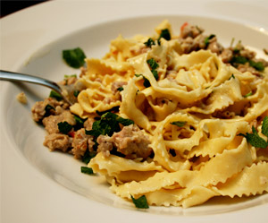

Pasta al Salsiccia
6 von 6Die enthäuteten Salsicce bzw. Bauernwürste mit Knoblauch, Chilli und etwas Zwiebel scharf anbraten. Mit Prosecco ablöschen und einige Minuten einkochen bis kaum was von der Flüssigkeit übrigbleibt, etwas Bouillon aufgiessen und nochmals stark einkochen. Mit einem Gutsch Rahm, Salz und Pfeffer abschmecken und frische Pfefferminze dazu geben. Mit den von Gabriel mit Liebe selbstgemachten Mafaldine vermengen und sofort servieren.
